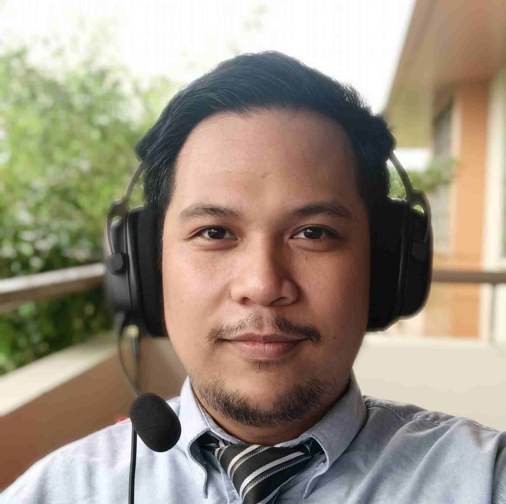

Jeff Bernard Candelario | WDD 130
Wassup! My name is Jeff Bernard and I am from Leyte Philippines. I enjoy baking pastries, especially brownies and pancakes. Currently I am studying Web Design and Development at BYU Idaho Online. I am excited to learn and am looking forward to one day create masterpieces of my own design.
